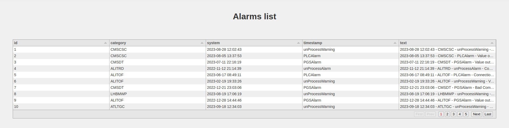

Introduction
At work we have an SQL database containing a list of alarms that are generated by different control systems. We usually receive Email and SMS notifications for that, but it’s not easy to get an overview of all the alarms. We decided then to create a simple web application that wraps the data on the database and allows people from the team to easily access it.
When thinking about the web applications I wanted to have the following requirements:
- The alarms data should be only read, no modifications are required
- The alarms data should be loaded with server side pagination, since the number of rows in the DB are ~O(\(10^4\)) and I don’t want to load them on the web page each time
- The data should be displayed on a table that allows for custom filtering. The only way to do filtering with server side pagination is for the table to send the filter queries on the backend and do some sort of server side filtering
- One of the columns should contains a link that open a page with all the details of the clicked alarm, like in a RESTful resource
Alternative tools
I initially evaluated the possibility of using some python libraries like streamlit, panel, h2o-wave, plotly’s dash, each one with a set of pros and cons. I decided to not use them because I felt that although using a data table is pretty easy (panel and dash support the use of tabulator for example), the server side pagination and filtering was a bit cumbersome. In addition, integrating the application with a python ASGI server started to be a bit too complicated to the point that having a single framework seemed the cleanest solution to me.
I have also considered few no-code tools that wrap any data around a web application. I have considered Apache’s superset which is a very powerful tool but it was probably an overkill. I have also though about using directus which works pretty ok but it adds metadata tables on your db and the filtering on the frontend is a bit cumbersome.
I ultimately decided to invest some time and go back to the basics of python web frameworks and vanilla javascript libraries. In the past I used FastAPI for a RESTful web application and I found it quite enjoyable, especially for its clear and extensive documentation. Since the project partially requires to serve data from an REST interface I decided to go for it and use it again.
On the frontend I started googling for javascript data tables. I also saw that streamlit had a plugin for AgGrid which seemed like an extremely powerful library but that requires a quite pricy license, so I decided to discard it. Some other options included DataTables and GridJs but I ultimately ended up trying tabulator because I liked the documentation and the set of examples it provided.
Setting up the project
In this section I will detail the steps I’ve taken to create the web project. You can also have a look at the final example at the demo repo on github for the final result.
DISCLAIMER I am not a web developer, I mainly work with gas systems and particle detectors. As such, my code may not be entirely safe and optimized for needs other than mine. Read, learn and use at your own risk 🤌
First thing, create a dedicated folder in which you can install your python virtual environment and application.
We will work inside the tabulator-sql-fastapi-demo folder from now on. Create a virtual environment and activate it
Create an app folder where we will put our code
Let’s create a requirements.txt file and start putting FastAPI with all the optional dependencies:
Creating the initial backend
Let’s start by creating a server with three endpoints: a main one served on /, one called /alarm which will serve as a resource for a single alarm and an /alarms one which will serve multiple alarms
app/main.py
Run the main application:
If you open your web browser at the link mentioned by uvicorn you should get the json response for each of the endpoint defined, e.g.
Create a database and populate it with some data
For simplicity I am going to use sqlite, but any popular SQL database should work fine. Note that I am not using any ORM to keep it as simple as possible. In this example, the database will consists of a single table alarms with the following columns:
idsystemtimestampcategorytext
We can create a file in the app folder to insert some simple synthetic data:
app/db.py
import sqlite3
import random
from datetime import datetime, timedelta
import sys
def create_db(db: str, table: str):
conn = sqlite3.connect(db)
cur = conn.cursor()
cur.execute(f"DROP TABLE IF EXISTS {table};")
cur.execute(f"""CREATE TABLE {table}(
id integer primary key autoincrement,
system, timestamp DATETIME, category, text);""")
conn.commit()The function above will create a table alarms on the provided sqlite db filepath. Next, we can create a function to generate data
app/db.py
...
def generate_data(n: int):
systems = ["ALITPC", "ALITRD", "ALITOF", "ATLRPC", "ATLTGC",
"ATLMDT", "CMSDT", "CMSRPC", "CMSCSC", "LHBRI1", "LHBRI2", "LHBMWP"]
categories = ["unProcessAlarm", "unProcessWarning", "PLCAlarm", "PGSAlarm"]
messages = ["Value outside range", "Bad Communication", "Connection issues"]
now = datetime.now()
last_year = now - timedelta(days=365)
random_data = []
for i in range(n):
random_system = random.choice(systems)
random_category = random.choice(categories)
random_epoch = random.randrange(
int(last_year.timestamp()), int(now.timestamp())
)
random_timestamp = datetime.fromtimestamp(random_epoch)
random_messages = random.choice(messages)
random_text = f"""{random_timestamp} - {random_system} - {random_category} - {random_messages}"""
random_data.append(
(random_system, random_timestamp, random_category, random_text)
)
return random_dataThis function is randomly sampling from a sequence of items to create unique rows. Also, a random timestamp is created by selecting a random value of epoch seconds between the current timestamp and the timestamp - 365 days.
We can then make a small function to insert the data in the database
app/db.py
Note that I have placed NULL because I let the id column autoincrement by itself.
Finally, we can put the pieces together and run all the functions:
app/db.py
The database can be filled by calling the db.py file:
We can verify that the alarms table is filled by running a simple query using the sqlite3 cli:
$ sqlite3 db.sqlite -cmd ".headers on" "SELECT * FROM alarms LIMIT 5"
id|system|timestamp|category|text
1|ATLTGC|2023-02-19 10:05:04|unProcessWarning|2023-02-19 10:05:04 - ATLTGC - unProcessWarning - Connection issues
2|LHBRI2|2023-01-18 19:44:03|unProcessWarning|2023-01-18 19:44:03 - LHBRI2 - unProcessWarning - Value outside range
3|ALITPC|2023-07-17 00:46:08|PLCAlarm|2023-07-17 00:46:08 - ALITPC - PLCAlarm - Bad Communication
4|CMSCSC|2023-01-18 03:57:57|unProcessWarning|2023-01-18 03:57:57 - CMSCSC - unProcessWarning - Bad Communication
5|CMSRPC|2022-12-05 04:28:17|PLCAlarm|2022-12-05 04:28:17 - CMSRPC - PLCAlarm - Value outside rangeImplementing the endpoints
We now want to be able to fetch the database rows from the /alarm endpoint and the /alarms one. The /alarm endpoint should have a mandatory query parameter which will be the id. The /alarms should instead support pagination, i.e. it should be able to receive two parameters page, which should indicate which page we want to retrieve and size which indicates the amount of rows per page.
In the main.py, the endpoint for /alarm would look like this:
app/main.py
- 1
-
I defined a GET endpoint for
/alarms - 2
-
I’m telling FastAPI that id should be an
intand a query parameter (passed through ‘?id=…’ on the url) - 3
- The db object is the dependency that I have explained earlier
- 4
-
By default the rows will be returned as a list of tuples but I wanted to return a list of
dictwhere the keys are the column names. - 5
- I am passing a query, selecting by id and using a placeholder to bind external values
Moving now to the /alarms endpoint, this will be a bit more sophisticated: in order to prepare the data to be consumed by Tabulator we would need to accept the size of a page size, the number of the page we want to get page, and we should return a json with one key called last_page indicating the total number of pages and one key called data with the returned data. The code looks like this:
app/main.py
@app.get("/alarms")
async def home(
request: Request,
1 page: Annotated[int, Query(ge=1)] = 1,
size: Annotated[int, Query(lt=100)] = 100,
db: sqlite3.Connection = Depends(get_db)
):
db.row_factory = sqlite3.Row
cursor = db.cursor()
2 offset = (page - 1) * size
3 cursor.execute("SELECT COUNT(id) FROM alarms")
n_rows = cursor.fetchone()['count']
4 n_pages = n_rows // size if n_rows % size == 0 else n_rows // size + 1
5 cursor.execute("SELECT * FROM alarms LIMIT ? OFFSET ?", (size, offset))
alarms = cursor.fetchall()
return {
'last_page': n_pages,
'data': alarms
}- 1
-
pageis a query parameter from a GET request. I’ve put the constraint that it should be always greater or equal than 1ge=1. Similarly,sizeis a query parameter and I’ve put a constraint on the maximum number of items that can be requested - 2
- I’m computing an offset that will be used by the SQL query to get the paginated rows
- 3
- Tabulator needs the total number of page so we need to count how many rows we have in the table
- 4
-
The number of pages depends on the number of rows and on the size of the page. Remember to add one for the remainder rows from the division
n_rows/size - 5
-
I’m selecting the alarms with
sizeandoffset
If you look now what you get at localhost:8000/alarms you would see something like:
Setting up tabulator
Now we can create a home page and setting up tabulator. We can start by defining an index.html file which will be returned by FastAPI when visiting /. We can create the file inside a templates folder and serve it as a jinja template in case we would need to add some custom logic later.
- Create the templates folder:
- Add and
index.htmlfile inside the folder:
app/templates/index.html
I have added a bare minimum amount of CSS to have a gray background and the title centered. We can now serve the file from FastAPI. To do so, we need to change the main.py file
app/main.py
from fastapi import FastAPI, Request, Query, Depends, Body
from fastapi.templating import Jinja2Templates
from typing import Annotated
import sqlite3
from pydantic_settings import BaseSettings, SettingsConfigDict
from pathlib import Path
class Settings(BaseSettings):
model_config = SettingsConfigDict(env_file=".env")
db_path: Path = "app/db.sqlite"
async def get_settings():
yield Settings()
async def get_db(settings: Annotated[Settings, Depends(get_settings)]):
conn = sqlite3.connect(settings.db_path)
try:
yield conn
finally:
conn.close()
app = FastAPI()
templates = Jinja2Templates('app/templates')
@app.get("/")
async def home(request: Request):
return templates.TemplateResponse('index.html', context={'request': request})
...Here we created a templates object that is using Jinja2 to render the files inside the app/templates folder. Note that for each TemplateResponse you need to pass a context object with the request.
We can now work on the index.html file by importing tabulator from a CDN and creating the Javascript object by refering to the documentation on loading AJAX data and on setting server side pagination:
app/index.html
<!DOCTYPE html>
<html>
<head>
<title>Alarms</title>
<style>
body {
font-family: Arial, sans-serif;
margin: 0;
padding: 0;
background-color: #f0f0f0;
}
h1 {
color: #333;
text-align: center;
padding: 20px;
}
#alarms-table {
margin: 3rem;
}
</style>
<link href="https://unpkg.com/tabulator-tables@5.5.2/dist/css/tabulator.min.css" rel="stylesheet">
<script type="text/javascript" src="https://unpkg.com/tabulator-tables@5.5.2/dist/js/tabulator.min.js"></script>
</head>
<body>
<h1>Alarms list</h1>
<div id="alarms-table"></div>
<script>
var table = new Tabulator("#alarms-table", {
layout: 'fitDataStretch',
ajaxURL: "/alarms",
ajaxContentType: 'json',
ajaxConfig: 'GET',
pagination: true,
paginationMode: "remote",
autoColumns: true,
paginationSize: 10
})
</script>
</body>
</html>Few things to note here:
- Pagination must be enabled and set to remote. If not, tabulator will expect the
ajaxURLto provide an array of records. - Setting
autoColumnsis needed if you don’t want to define the column by yourself.
This is what my web page look like:

Adding server side filtering
Tabulator allows to have some filters on the header of each column. A query is sent to the ajaxURL in the form of an array. We should also change the method from GET to POST, as I had a hard-time trying to pass URL-encoded lists to FastAPI and get it parsed as query parameters, so a body parameter is more adequate. Let’s enable header filters:
app/index.html
<!DOCTYPE html>
<html>
<head>
<title>Alarms</title>
<style>
body {
font-family: Arial, sans-serif;
margin: 0;
padding: 0;
background-color: #f0f0f0;
}
h1 {
color: #333;
text-align: center;
padding: 20px;
}
#alarms-table {
margin: 3rem;
}
</style>
<link href="https://unpkg.com/tabulator-tables@5.5.2/dist/css/tabulator.min.css" rel="stylesheet">
<script type="text/javascript" src="https://unpkg.com/tabulator-tables@5.5.2/dist/js/tabulator.min.js"></script>
</head>
<body>
<h1>Alarms list</h1>
<div id="alarms-table"></div>
<script>
var table = new Tabulator("#alarms-table", {
layout: 'fitDataStretch',
ajaxURL: "/alarms",
ajaxContentType: 'json',
ajaxConfig: 'POST',
pagination: true,
paginationMode: "remote",
paginationSize: 10,
filterMode: 'remote',
autoColumns: true,
autoColumnsDefinitions: [
{field: 'text', title: 'Text', headerFilter: "input"}
]
})
</script>
</body>
</html>And update the code in the main.py file
app/main.py
from fastapi import FastAPI, Request, Query, Depends, Body
...
@app.post("/alarms")
async def home(
request: Request,
page: Annotated[int, Body(ge=1)] = 1,
size: Annotated[int, Body(lt=100)] = 100,
db: sqlite3.Connection = Depends(get_db),
filter: Annotated[list[dict], Body()] = None
):
db.row_factory = sqlite3.Row
cursor = db.cursor()
offset = (page - 1) * size
cursor.execute("SELECT COUNT(id) as count FROM alarms")
n_rows = cursor.fetchone()['count']
n_pages = n_rows // size if n_rows % size == 0 else n_rows // size + 1
cursor.execute("SELECT * FROM alarms LIMIT ? OFFSET ?", (size, offset))
alarms = cursor.fetchall()
return {
'last_page': n_pages,
'data': alarms
}If you inspect the request from the developer console, you would see that when typing something in the text this json payload is sent:
The filter key contains a list of filters, each one for a set of condition that we can use to filter the data on our db. In particular, the field key refers to the column of the table, the type is the operator used and value is the value typed in in the header input. We should only be careful about possible SQL injections. For this reason
app/main.py
@app.post("/alarms")
async def home(
request: Request,
page: Annotated[int, Body(ge=1)] = 1,
size: Annotated[int, Body(lt=100)] = 100,
db: sqlite3.Connection = Depends(get_db),
filter: Annotated[list[dict], Body()] = None
):
db.row_factory = sqlite3.Row
cursor = db.cursor()
1 where_clauses = []
where_query = ""
placeholder_values = []
if len(filter): # Apply a WHERE clause in the SQL query
where_query += " WHERE "
for filter_obj in filter:
field, type, value = filter_obj['field'], filter_obj['type'], filter_obj['value']
# Check that the filter field can be trusted and exists as a column in our table
2 cursor.execute("select name from PRAGMA_TABLE_INFO('alarms') where name = ?", (field,))
column_field = cursor.fetchone()
operand = type.upper()
if column_field: # the filter field exists as a column
3 match operand:
case 'LIKE': # if using like as tabulator mention, add wildcards
placeholder_value = f'%{value}%'
case '=': # this is mostly used for numerical, categorical or date filtering
placeholder_value = value
case other: # the operand is not supported, return an HTTP 400 response
raise HTTPException(status_code=400, detail=f"Filter type {operand} not supported.")
where_clauses.append(f"{column_field['name']} {operand} ?")
placeholder_values.append(placeholder_value)
where_query += " AND ".join(where_clauses)
offset = (page - 1) * size
cursor.execute("SELECT COUNT(id) as count FROM alarms")
n_rows = cursor.fetchone()['count']
n_pages = n_rows // size if n_rows % size == 0 else n_rows // size + 1
cursor.execute(f"SELECT * FROM alarms {where_query} LIMIT ? OFFSET ?", (*placeholder_values, size, offset))
alarms = cursor.fetchall()
return {
'last_page': n_pages,
'data': alarms
}- 1
-
I’m converting the list of filters as a list of SQL expressions that will end inside a
WHEREclause. - 2
-
In this case I’m using an sqlite function to check if the
fieldin the filter object passed is actually an existing column. In other databases and libraries such as PostgreSQL and pyscopg you can safely escape SQL identifier. In this case you can’t so either you escape the column name by your own or (at least I think) you check that the column name is valid and existing. - 3
-
The safety on the user input applies also for the operand, called
typein the filter payload. In this case I’m supporting only two operators:LIKEand=. Any other string would raise an HTTP response with status code 400
And that’s it, now we have text filtering!
Adding date filters
Now that the general idea behind server side filtering is clear, we could extend the filtering also to dates.
app/templates/index.html
<!DOCTYPE html>
<html>
<head>
<title>Alarms</title>
<style>
body {
font-family: Arial, sans-serif;
margin: 0;
padding: 0;
background-color: #f0f0f0;
}
h1 {
color: #333;
text-align: center;
padding: 20px;
}
#alarms-table {
margin: 3rem;
}
</style>
<link href="https://unpkg.com/tabulator-tables@5.5.2/dist/css/tabulator.min.css" rel="stylesheet">
<script type="text/javascript" src="https://unpkg.com/tabulator-tables@5.5.2/dist/js/tabulator.min.js"></script>
<script src="https://cdnjs.cloudflare.com/ajax/libs/luxon/3.4.3/luxon.min.js"
integrity="sha512-gUQcFuEaDuAEqvxIQ9GDdMcCeFmG5MPnoc6ruJn+nyCNHrHM2oB97GOVLIOiixzTxPYmIfEQbOoQmx55UscLyw=="
crossorigin="anonymous" referrerpolicy="no-referrer"></script>
</head>
<body>
<h1>Alarms list</h1>
<div id="alarms-table"></div>
<script>
var table = new Tabulator("#alarms-table", {
layout: 'fitDataStretch',
ajaxURL: "/alarms",
ajaxContentType: 'json',
ajaxConfig: 'POST',
pagination: true,
paginationMode: "remote",
paginationSize: 10,
filterMode: 'remote',
autoColumns: true,
autoColumnsDefinitions: [
{field: 'text', title: 'Text', headerFilter: "input"},
{field: 'timestamp', title: 'Alarm timestamp',
formatter: 'datetime', headerFilter: 'date'}
]
})
</script>
</body>
</html>Note that I have added the luxon.js library as mentioned in the tabulator documentation. I have a put a date filter for a datetime column. This is because I would like the filter to get only the rows received on a particular date.
On the backend side we would need to deal with this particular case: if the column is timestamp, then we can convert the timestamp to date and use it for our where clause:
app/main.py
...
@app.post("/alarms")
async def home(
request: Request,
page: Annotated[int, Body(ge=1)] = 1,
size: Annotated[int, Body(lt=100)] = 100,
db: sqlite3.Connection = Depends(get_db),
filter: Annotated[list[dict], Body()] = None
):
db.row_factory = sqlite3.Row
cursor = db.cursor()
where_clauses = []
where_query = ""
placeholder_values = []
if len(filter): # Apply a WHERE clause in the SQL query
where_query += " WHERE "
for filter_obj in filter:
field, type, value = filter_obj['field'], filter_obj['type'], filter_obj['value']
# Check that the filter field can be trusted and exists as a column in our table
cursor.execute("select name from PRAGMA_TABLE_INFO('alarms') where name = ?", (field,))
column_field = cursor.fetchone()
operand = type.upper()
if column_field: # the filter field exists as a column
identifier = column_field['name']
match (operand, identifier):
case 'LIKE', _: # if using like as tabulator mention, add wildcards
placeholder_value = f'%{value}%'
case ('=', 'timestamp'):
# convert the timestamp identifier column to a date
column_field
placeholder_value = value
identifier = f"strftime('%Y-%m-%d', {column_field['name']})"
case ('=', _): # this is mostly used for numerical, categorical or date filtering
placeholder_value = value
case other: # the operand is not supported, return an HTTP 400 response
raise HTTPException(status_code=400, detail=f"Filter type {operand} not supported.")
where_clauses.append(f"{identifier} {operand} ?")
placeholder_values.append(placeholder_value)
where_query += " AND ".join(where_clauses)
offset = (page - 1) * size
cursor.execute("SELECT COUNT(id) as count FROM alarms")
n_rows = cursor.fetchone()['count']
n_pages = n_rows // size if n_rows % size == 0 else n_rows // size + 1
cursor.execute(f"SELECT * FROM alarms {where_query} LIMIT ? OFFSET ?", (*placeholder_values, size, offset))
alarms = cursor.fetchall()
return {
'last_page': n_pages,
'data': alarms
}As you can see I made use of python’s match operator to match on both the field and the type. In the case of alarm as a field I am casting the datetime column to date.
After setting all this up you should have a nice table that allows you to filter on the text and date column.
This is the end result I’m getting for the code written:
Conclusion and remarks
The idea of this blog post was for me to document the steps required to create a powerful javascript table that wraps a data source. In my real case I am using a different database and different visualization features, but the main ideas are the one shown here. In case you would like to clone the final result you can check out my github repo here: https://github.com/grigolet/tabulator-sql-fastapi-demo. There are for sure better ways to implement what I’ve done and any suggestion is more than welcome. I may also have some unsafe code. If that is the case, please feel free to let me know in the comments. There are other features that I haven’t investigated yet, such as having categorical selections on some columns. I might update this post if further developments happen.